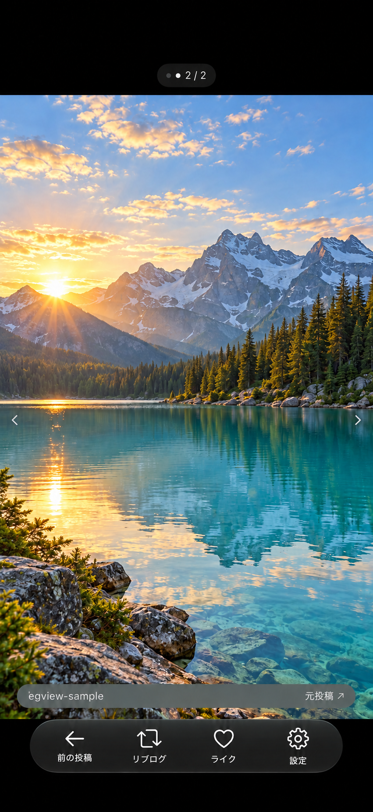

写真に集中するために。
egviewは、自分のTumblrアカウントのダッシュボード、ライクした投稿、所有ブログの画像を、1投稿ずつ全画面で眺める個人用アプリです。画像閲覧に必要な操作をシンプルにまとめ、好きな写真を自分のペースで見ることを目的に開発しています。
画像の縦横比を保ち、最初は全体が画面に収まるように表示します。余白は黒、切り替えのアニメーションはありません。画像を画面全体に広げ、枚数・出典・小さな操作バーをその上に重ねます。ピンチで気になる部分を拡大できます。
気に入った投稿は、投稿全体を自分のブログの予約投稿キューへリブログできます。新しい画像のアップロードやオリジナル投稿の作成は行いません。
画像を主役にした画面


画面の見方
- 上部のドットと枚数
Photosetの画像数と現在位置を示します。この例では2枚目を表示しています。
- 画像と出典
左右の矢印はスワイプの案内です。下部のブログ名や「元投稿」リンクから出典を確認できます。
- 下部の操作バー
前の投稿へ戻る、キューへリブログ、ライクの付与・解除、設定を開く、の4操作をまとめています。
iOS 26以降ではLiquid Glass、それ以前の対応OSでは半透明のMaterialを使います。操作バーと枚数は、画像を拡大しても同じ大きさです。
主な機能
写真だけを、全画面で
縦持ちのiPhoneで画像全体をフィット。本文や動画・音声を描画せず、画像を眺めるための画面に絞ります。ピンチで1〜5倍に拡大できます。
PhotosetとGIF
複数画像は左右スワイプで1枚ずつ。上部のドットと枚数で位置を示し、GIFはアニメーション再生します。戻ると以前の画像位置を復元します。
10投稿の全画像を先読み
現在を含む10投稿の画像を順次準備します。Photosetは1投稿として全画像を対象にし、APIが提供する高画質候補を優先します。閲覧が進むと続きを補充します。
キューへリブログ
ダブルタップや下部ボタンで、投稿全体を選んだ所有ブログのキューへ。成功後に次の投稿へ進み、公開時刻はTumblr側のキュー設定に従います。
表示先とライク
設定からダッシュボード、ライク、所有ブログへ。ハートでライクを付け、もう一度押すと解除できます。ライク操作後は同じ投稿に留まります。
端末内の一時キャッシュ
取得から72時間を期限とし、初期上限は200MB。MB単位の上限変更、使用量表示、手動削除ができます。表示に必要な画像を優先し、iCloud同期は行いません。
表示対象は、公式APIでtext／photoとして返り、画像を含む投稿です。 画像のない投稿や他のタイプを除き、同じ元投稿のリブログは最初の1件だけを表示します。Webの全投稿・件数・順序と一致するとは限りません。
Webの「お気に入りをトップに表示する」と同じ推薦順には未対応です。Webの「フォロー中」と比較する場合は、Tumblr側のこの設定をOFFにすることを推奨しています。投稿URLを設定から個別に開き、ダッシュボード内の位置を照合する機能もあります。
先読みは通信や容量の影響を受けます。未準備の画像は現在の画像を保って待ち、取得できない投稿はスキップします。通信中まで瞬時に切り替わることや、停止中の厳密な72時間の物理削除は保証していません。
基本的な使い方
- 初回の設定画面で「Tumblrに接続」を選び、Tumblrの公式認可画面で読み取り・リブログ・ライクに必要な権限を許可します。未接続でも同梱サンプルで操作を試せます。
- ダッシュボードの画像を閲覧します。設定からライクや所有ブログに切り替え、リブログ先の所有ブログも選べます。
- タップで次の投稿、左右スワイプで投稿内の画像を移動します。気に入った投稿はリブログやライクで残せます。
| 操作 | 動作 |
|---|---|
| 1本指でシングルタップ | 次の投稿へ。Photosetの次の1枚へ進む操作とは別です。 |
| 1本指でダブルタップ | 現在の投稿全体をキューへリブログし、成功後に次の投稿へ進みます。 |
| 左から右へスワイプ | 前の画像へ。1枚目なら前の投稿へ戻ります。 |
| 右から左へスワイプ | 次の画像へ。最後の画像（単一画像を含む）なら次の投稿へ進みます。 |
| ピンチ／拡大中の2本指ドラッグ | 1〜5倍に拡大・縮小し、画像内を移動します。投稿・画像切替や再訪では通常サイズへ戻ります。 |
| 2本指でタップ | ダッシュボードへ戻って再取得します。 |
| 下部の「←」 | Photosetの表示位置にかかわらず、前の投稿へ戻ります。 |
| 下部の「リブログ」 | キュー追加に成功したら次の投稿へ進みます。 |
| 下部のハート | ライクを付与・解除し、その投稿に留まります。 |
| 下部の「設定」 | 表示先・所有ブログ・アカウント・キャッシュ・投稿URLの確認などを開きます。 |
下部ボタンと出典リンクは個別の操作を優先します。画像準備中の戻る操作は、待機中の前進を取り消します。リブログの失敗・結果不明、フィード終端、指定URLの単一投稿閲覧では現在の投稿を保ちます。結果不明の書き込みは自動再送しません。VoiceOverでは下部ボタンとカスタムアクションを利用できます。
表示範囲とコンテンツラベル
公式APIと本人のアカウント設定で利用できる画像を対象にします。成人向けとマークされたブログについては、個別投稿と代表画像の取得を確認しています。すべての投稿の表示や、ラベル・表示設定の反映を保証する確認ではありません。
リブログは標準APIで元投稿全体をキューへ追加します。egviewから追加のMatureラベルやNSFWタグを送る設定はありません。元投稿のラベルがキュー内で継承されるかは、実機で引き続き確認しています。
egviewはTumblrの非公式アプリであり、Tumblrの運営・承認を受けたものではありません。参考：Tumblrのコンテンツラベルの説明 ↗
アカウントと画像の扱い
Tumblrのパスワードはアプリ内で収集しません。公式OAuthのコード交換とトークン更新に認証サービスを使い、端末の認可情報はKeychainに保管します。画像は各端末の一時キャッシュに置き、端末間で同期しません。
設定から画像キャッシュを削除できます。ログアウトすると、この端末の認可情報と画像を削除してサンプルへ戻ります。再接続時も以前の画像を削除します。診断メモやURL照合結果の共有は、利用者が共有操作を選んだときに行います。
接続先と保存・削除の詳細はプライバシーポリシーのegview欄で説明しています。
開発状況と公開について
iOSプロトタイプを開発・試用中で、一般配布していません。 画像閲覧、Photoset、GIF、ピンチ、ライク付与・解除、キューリブログを実装しています。実機でキュー追加と1,500件の生投稿取得を確認した報告があり、左右スワイプの復旧・容量整理中の速度・長時間負荷・ラベル継承を引き続き確認します。
現在の対象はiOS 18以上のiPhoneです。iPadOS・macOS版は今後の予定で、macOS版は公証取得を予定しています。完成時期、一般向けの配布方法、価格は未定です。App Storeでの公開は将来検討します。
掲載内容は時点のiOSプロトタイプ0.1.10に基づきます。機能・操作・対応範囲は開発と検証を通じて変更される場合があります。掲載の画面例は第三者の投稿写真を使わず、生成した風景へ差し替えたものです。